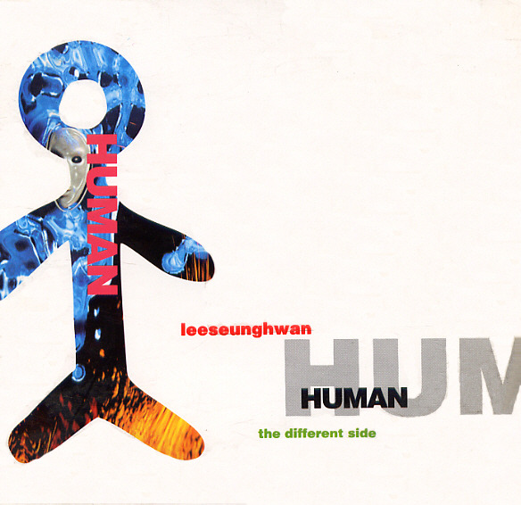

안녕하세요, 라보엠입니다.
오늘은 1990년대 발라드의 정수를 보여주는 이승환의 대표곡 ‘천일동안’을 소개해드리겠습니다. 1995년 발매된 4집 [Human]의 타이틀곡인 이 곡은, 30년 가까이 지난 지금도 여전히 많은 이들의 사랑을 받으며, 이별의 아픔과 사랑의 깊이를 가장 섬세하게 담아낸 명곡으로 손꼽힙니다. 학창시절 야간자율학습시간에 테이프가 닳도록 들었던 기억이나는 노래입니다.

곡의 탄생과 음악적 배경
‘천일동안’은 이승환이 직접 작사하고, 전람회의 김동률이 작곡에 참여한 곡입니다. 당시 국내에서는 드물게 미국 LA의 레코딩 스튜디오에서 세계적인 세션 연주자들과 함께 녹음된 이 앨범은, 발매 당시부터 음악적 완성도와 감성 모두에서 극찬을 받았습니다. 당시 미국에서도 한국에서 왠 왕자가 와서 돈을 뿌리며 세션을 써서 녹음하고 있다고 소문이 자자했습니다. 결국 30년이 지나도 사람들이 듣는 고퀄의 노래가 탄생했습니다. 특히 피아노, 스트링, 색소폰 등 다양한 악기가 어우러진 웅장하면서도 섬세한 편곡이 곡의 감정선을 극대화하고 있습니다.
이승환의 담백하면서도 호소력 짙은 목소리는 ‘천일동안’의 감정을 더욱 깊이 있게 전달합니다. 절제된 감정 표현과 고음의 폭발력이 절묘하게 어우러져, 듣는 이로 하여금 자신의 지난 사랑을 떠올리게 만듭니다. 특히 곡의 후반부로 갈수록 감정이 고조되며, 이별의 아픔이 고스란히 전해집니다.
천일동안 노래 가사 - 가사에 담긴 천일의 무게
천일동안 난
우리의 사랑이 영원할
거라 믿어 왔었던거죠
어리석게도
그런 줄로만 알고 있었죠
헤어지자는 말은 참을수 있었지만
당신의 행복을 빌어줄
내 모습이 낯설어 보이진 않을런지
그 천일동안 알고 있었나요
많이웃고 또 많이울던 당신을 항상
지켜주던 감사해하던
너무 사랑했던 나를
보고싶겠죠 천일이 훨씬
지난 후에라도 역시
그럴테죠 괜찮아요
당신이 내곁에 있어줬잖아요
그 천일동안 힘들었었나요
혹시 내가 당신을 아프게 했었나요
용서해요 나 그랬다면
마지막일거니까요
난 자유롭죠 그 날 이후로
다만 그냥 당신이 궁금할 뿐이죠
다음 세상에서라도 우리
다시는 만나지 마요
그 천일동안
‘천일동안’의 가사는 오랜 시간 사랑했던 연인과의 이별을 담담하게 받아들이는 화자의 심정을 그려냅니다. “천일동안 난 우리의 사랑이 영원할 거라 믿어왔었던 거죠”라는 첫 소절에서부터, 사랑이 끝났음을 받아들이는 슬픔과 후회, 그리고 상대방의 행복을 빌어주는 따뜻한 마음이 절절하게 전해집니다. 특히 “헤어지자는 말은 참을 수 있었지만, 당신의 행복을 빌어줄 내 모습이 낯설어 보이진 않을런지”라는 구절은, 이별의 순간에도 여전히 남아 있는 사랑과 미련을 섬세하게 표현하고 있는데요, 후렴구에서는 “그 천일동안 알고 있었나요, 많이 웃고 또 많이 울던 당신을 항상 지켜주던 감사해 하던 너무 사랑했던 나를”이라는 가사가 반복되며, 사랑의 시간 동안 함께한 추억과 감정이 파도처럼 밀려옵니다. 이 곡의 가사는 단순한 이별의 슬픔을 넘어, 사랑했던 시간에 대한 감사와 미련, 그리고 다시는 만날 수 없는 안타까움까지 모두 담아냅니다.
음악적 완성도와 참여진
‘천일동안’은 국내 발라드 곡 중에서도 손에 꼽히는 완성도를 자랑합니다. 김동률의 감성적인 멜로디와, 세계적인 세션 연주자들이 참여한 편곡은 곡의 깊이를 한층 더해주고 있습니다.
- 피아노: Jon Gilutin
- 베이스: Leland Sklar
- 드럼: John Robinson
- 색소폰: Eric Marienthal
- 기타: Michael Thompson
이외에도 다양한 세션과 오케스트라가 곡의 감정선을 세밀하게 채워줍니다.
세대를 아우르는 명곡의 힘
‘천일동안’은 발매 이후 수많은 가수들에 의해 리메이크되며, 세대를 초월해 사랑받는 곡이 되었습니다. 이승환의 라이브 무대는 물론, 최근 방송에서도 꾸준히 소개되며, 여전히 많은 이들의 추억과 감정을 자극합니다. 이 곡은 이별을 겪은 이들에게는 위로와 공감을, 사랑을 시작하는 이들에게는 소중한 시간을 아끼라는 메시지를 전해줍니다. 저는 많은 리메이크중 나는가수다에서 부른 옥주현의 리메이크를 가장 좋아합니다.
맺음말
이승환의 ‘천일동안’은 사랑의 시작과 끝, 그리고 그 사이의 모든 감정을 섬세하게 담아낸 발라드의 명곡입니다. 이 곡을 듣고 있으면, 지나간 사랑에 대한 아련한 그리움과 함께, 앞으로의 사랑을 더욱 소중히 여기고 싶어집니다. 오늘 하루, ‘천일동안’을 들으며 자신의 사랑과 이별, 그리고 남겨진 마음을 다시 한 번 돌아보는 시간을 가져보는 건 어떨까요? 이 곡이 여러분의 하루에 작은 위로와 깊은 여운이 되길 바랍니다.